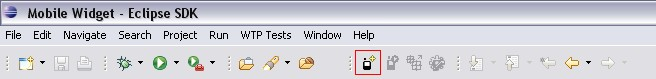
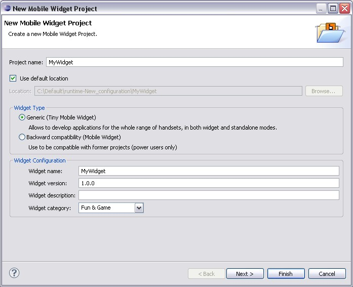
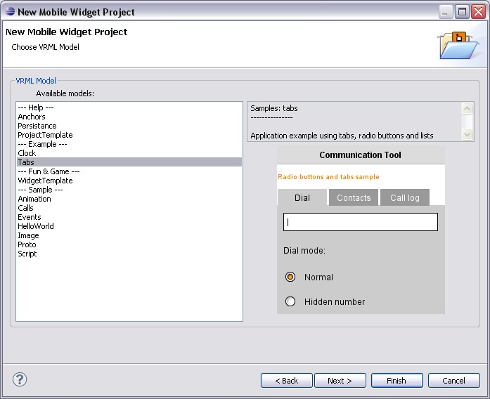
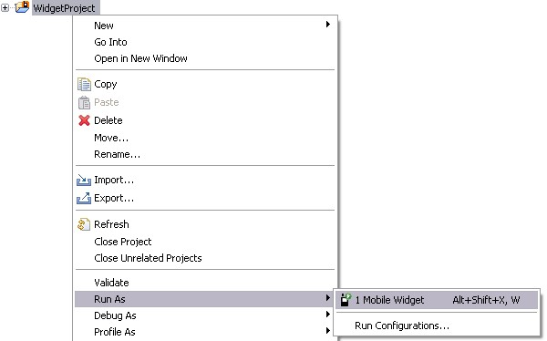
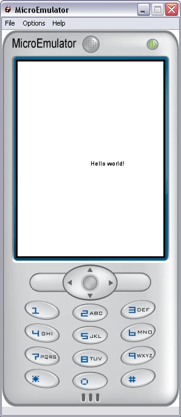

We start with a very simply project: The "Hello world!" project.
"Hello world" project displays "Hello world" message.
To create a new project on Eclipse, click on the New Widget Project
icon on the Toolbar (marked in red):

The new project wizard page is then displayed:

Complete new project wizard.
The next page is the selection of project models.
Select "HelloWorld" model and click on the Finish button.

Your project is created.
To launch project, right click on a Mobile Widget, and select Run As > Mobile Widget.

Congratulation! Your project is launched.

Open main.wrl file (in src folder) and copy/paste following VRML code in Eclipse editor.
Save the main.wrl file (use Ctrl + S shortcut).
Launch the widget.